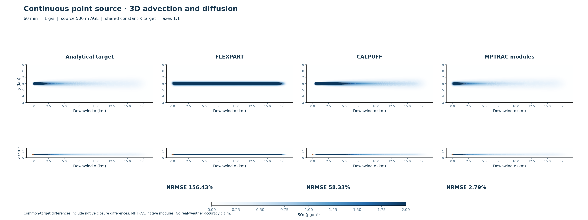
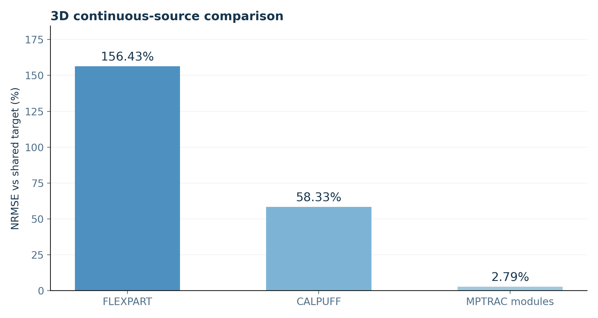

A fixed source.
Three-dimensional diffusion.
Continuous 1 g/s · 500 m AGL · 1 hour · 5 m/s wind
This is a common-target comparison, not three identical diffusion equations. Native FLEXPART PBL and CALPUFF Draxler closures differ from the constant-K target. MPTRAC retains its native density drift. Large differences must not be presented as pure numerical errors or a model ranking.

All 3,840 comparisons
320 fixed three-dimensional cells × 12 consecutive 5-minute means. Each cell is 250 × 250 × 50 m. The singular source cell is excluded in the design; all selected pairs, including zeros, are retained.
| Native method | RMSE · µg/m³ | NRMSE | Max |difference| · µg/m³ |
|---|---|---|---|
| FLEXPART · native PBL | 0.503844 | 156.433% | 3.688815 |
| CALPUFF · native Draxler | 0.187855 | 58.325% | 1.667297 |
| MPTRAC · native modules | 0.008982 | 2.789% | 0.108705 |

Separate the closure difference
| Method | Native vs own-law companion | Own-law companion vs common target |
|---|---|---|
| CALPUFF | 3.618% | 57.606% |
| MPTRAC | 2.804% | 0.327% |
These residuals still include source/time sampling and observation integration. FLEXPART's spatially varying native Hanna closure has no closed-form companion claimed here.
Independent three-dimensional reference
Zero initial concentration; a fixed continuous point source; Kx = Ky = 50 and Kz = 5 m²/s. Flat ground is reflecting, with no chemistry, deposition or thermal plume rise. This test verifies diffusion observables separately from the earlier hill advection test.
Native calculations and limits
FLEXPART uses the unchanged existing research driver, 200,000 requested particles and its native diagnosed boundary-layer turbulence. The initial stable input diagnosed only a 100 m PBL, leaving the 500 m source without vertical turbulence; that entire run and its non-admitted scores are preserved. The admitted input has a hydrostatic neutral potential-temperature layer with a stable cap at 3 km. Actual PBL and nonzero vertical spread are checked from particle records, not assumed from the PBLH input.
CALPUFF uses its unchanged native driver with external turbulence parameters fixed before outputs. Lateral and vertical long-age diffusivities target 50 and 5 m²/s, but finite-age Draxler growth differs. Its supported volume-source point limit starts with 1 m horizontal/vertical sigma; this is explicitly included in its own-law companion. There is no source heat or momentum rise. Its display-only receiver run ends with byte-identical native puff records.
MPTRAC calls original module_advect and module_diff_turb, with constant 50/50/5 m²/s, native physical-height/pressure conversion, density drift and surface reflection. It is a native-module benchmark, not a complete production-driver validation. All 200,000 continuous births retain their specified mass; no replacement diffusion solver is used.
All meteorology is manufactured verification input, not observed or forecast weather. This is flat terrain: replacing z by z-h in a flat diffusion formula would not validate physical hill diffusion. One realization and one numerical resolution do not establish convergence or model superiority. No concentrations, source strengths or reference coefficients were fitted to outputs.